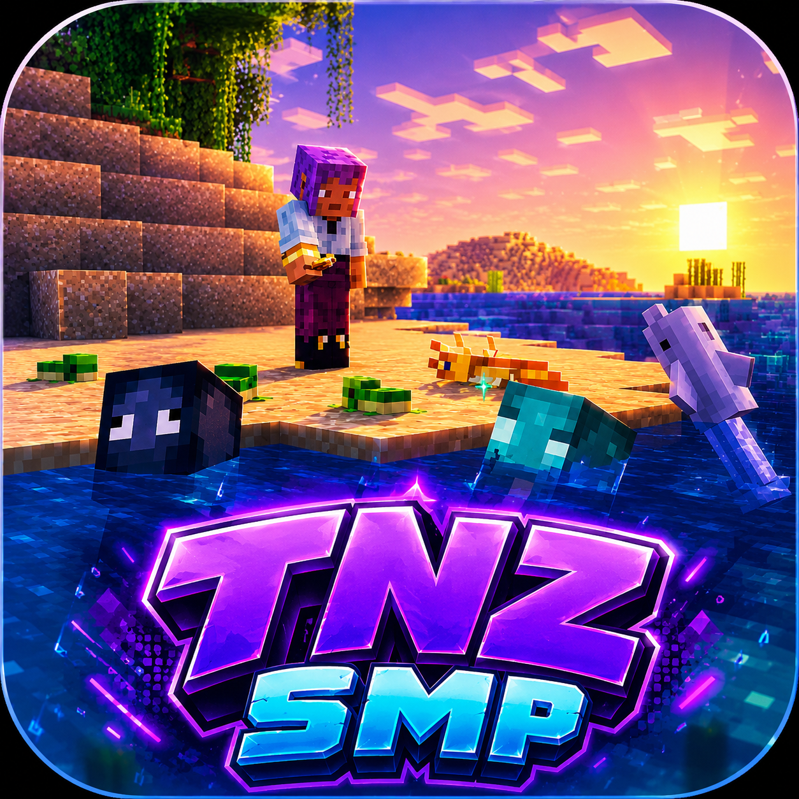

🌎
Большой мир
Исследуй биомы, находи красивые места и создавай собственные проекты.
Добро пожаловать на tnzsmp — сервер, где можно спокойно выживать, строить, исследовать мир и играть вместе с друзьями.
tnzsmp52.mcsh.ioКопироватьЗдесь собраны основные возможности сервера. Никаких лишних элементов — только то, что действительно нужно игроку.
Исследуй биомы, находи красивые места и создавай собственные проекты.
Создавай базы, города и масштабные постройки вместе с друзьями.
Добывай ресурсы, отправляйся в путешествия и развивай своего персонажа.
Общайся с игроками и участвуй в жизни сервера.
Версия сервера — 26.1.2. Скопируй адрес, добавь сервер в Minecraft и заходи играть.
tnzsmp52.mcsh.ioКопировать
Установи нашу сборку для удобного старта на сервере. В ней собраны необходимые компоненты для игры на tnzsmp.
⚠️ Состав модов можно описать точнее, если предоставить сам файл сборки — ссылка Google Drive в этой среде не открылась.
Соблюдай правила — так сервер останется комфортным для всех.
Запрещено ломать, поджигать, взрывать и любым способом портить чужие постройки.
Нельзя забирать чужие ресурсы, предметы, животных или вещи из чужих хранилищ.
Запрещены читы, x-ray, kill aura, fly, freecam и любые модификации, дающие нечестное преимущество.
Запрещено намеренно использовать баги, дюпы и уязвимости для получения ресурсов или преимущества.
Не спамь сообщениями, не рекламируй сторонние проекты без разрешения администрации.
Запрещены травля, угрозы, массовые оскорбления и намеренная провокация игроков.
Нельзя обходить бан, мут или другое наказание с помощью дополнительных аккаунтов.
Запрещены DDoS, попытки взлома, краш сервера и любые действия, направленные на его остановку.
Три простых шага — и ты уже в мире tnzsmp.
Подготовь Minecraft версии 26.1.2.
Перейди к разделу сборки выше и скачай её с Google Drive.
Добавь tnzsmp52.mcsh.io в список серверов и заходи.
Сейчас на сайте указана версия 26.1.2.
tnzsmp52.mcsh.io
В разделе «Скачать сборку» находится кнопка на указанную тобой Google Drive-ссылку.
Нет. Гриферство, кражи и порча чужих построек запрещены.